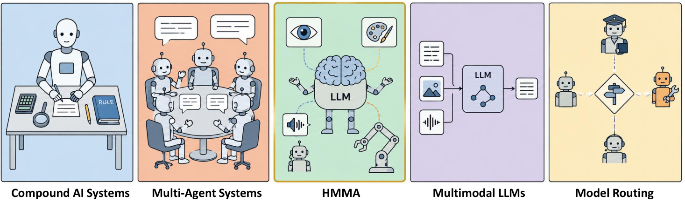

Paper Browser
572 papers from 19 venues, organized by interaction pattern and domain.
| Title | Venue | Year | Pattern | Domain |
|---|
Overview
Large language models have become a common center for building intelligent agents, yet many real tasks still need abilities that a single LLM cannot provide. A growing line of work therefore connects LLMs with specialized non-LLM models: object detectors, segmentation models, diffusion generators, and robot policies. We call this emerging paradigm Heterogeneous Multi-Model Agents (HMMAs).
This survey systematically reviews 682 HMMA papers from major AI venues between 2023 and 2026, organizes them into five interaction patterns, and analyzes architectural choices across information flow, interface design, feedback structure, uncertainty handling, and model coupling.
Collection funnel
2023–2026 · 19 venues

Five Interaction Patterns
Systems are organized by which specialist roles the LLM orchestrates: Perception, Generation, Action.
Trends & Distributions
Interaction patterns over time
Venue × year heatmap
Application domain × interaction pattern
Architectural Analysis
How HMMAs are wired: distributions over five cross-cutting design dimensions (share of 572 papers).
Information flow
Interface type
Feedback structure
Uncertainty handling
Model coupling
Application domains
Reproducible Pipeline
The literature base was built with a fully scripted, resumable LLM-assisted pipeline, reusable for other survey topics.
Crawl
Metadata for 19 venues from papers.cool + DBLP, abstracts enriched via Semantic Scholar.
Coarse screen
LLM filters title + abstract for topic relevance, optimized for recall.
Deep screen
Full-text LLM screening of downloaded PDFs, optimized for precision.
Annotate
Structured taxonomy labels extracted per paper; suspects automatically re-annotated.
Verify
Authors manually verify all 591 candidates; 19 filtered out, 572 remain.
Citation
The public preprint was released under the earlier title shown below.
Public preprint on Preprints.org · Download BibTeX
@article{zhang2026hmma,
title = {Orchestrating {LLMs} with Specialized Models: A Survey on Heterogeneous Multi-Model Agents},
author = {Zhang, Zheng and Yao, Nanjie and Feng, Yu and Chai, Qi and Liu, Liu and Ye, Deheng and Zhao, Peilin and Zhou, Xiangxin and Wang, Hao and Xiong, Hui},
journal = {Preprints.org},
year = {2026},
doi = {10.20944/preprints202607.1041.v1},
url = {https://doi.org/10.20944/preprints202607.1041.v1}
}